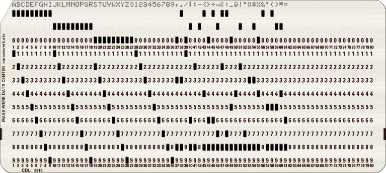

Digite os comandos no campo "LINHA DE COMANDO", o sistema só aceita os caracteres que o cartão possui:
A B C D E F G H I J K L M N O P Q R S T U V W X Y Z 0 1 2 3 4 5 6 7 8 9 , . / ; : - < > + ¬ ¢ | _ @ ! " # $ % & ' ( ) * = SPACE

Após digitar os comandos pressione "ENTER" para gravar no cartão, uma vez gravado não poderá ser alterado.
Utilize as teclas de movimentação ("PARA CIMA" e "PARA BAIXO") para navegar nos cartões que foram gravados.
Para reniciar tudo pressione a tecla "ESC" ou dê um "F5" no navegador.
PROGRAM 'HELLO WORLD';
VAR
N1, N2, N3: INTEGER;
BEGIN
N1 := READLN('INFORME O VALOR DE N1: ');
N2 := READLN('INFORME O VALOR DE N1: ');
N3 := N1 + N2;
WRITELN('O RESULTADO = ', N3);
END.
O código fonte pode ser visualizado no seguinte repositório do Github:
Github do Repositório do Código @diogoschimm